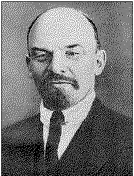

|
V. I. LENINBOURGEOIS PACIFISM
|  |
PUBLISHER'S NOTE
This is a collection of V. I. Lenin's three articles on war and peace. "Socialism and War" has been reprinted from the pamphlet under the same title published in English by the Foreign Languages Publishing House, Moscow, in 1950; "The War Programme of the Proletarian Revolution" from V. I. Lenin, Selected Works, English edition, FLPH, Moscow, 1952, Vol. I, Part 2; and "Bourgeois Pacifism and Socialist Pacifism" from V. I. Lenin, Selected Works, Lawrence and Wishart, London, 1936, Vol. V. A few stylistic changes have been made in the present collection.
The notes at the end of the book are largely taken from those given in the Chinese edition, published under the same title by the People's Publishing House, Peking, in July 1964. Some notes given in the English editions mentioned above have also been used.
|
Article (or Chapter) I. The Turn in World Politics |
|
73 |
|
Article (or Chapter) II.
The Pacifism of Kautsky and |
|
|
|
Article (or Chapter) III.
The Pacifism of the French |
|
|
|
Article (or Chapter) IV. Zimmerwald at the Cross-roads |
|
93 |
page 73
ARTICLE (OR CHAPTER) I
THE TURN IN WORLD POLITICS
There are symptoms that such a turn has taken place, or is about to take place; that is, a turn from imperialist war to imperialist peace.
The undoubtedly severe exhaustion of both imperialist coalitions; the difficulty of continuing the war any longer; the difficulty for the capitalists generally, and for finance capital in particular, to skin the people more than they have done already, in the way of outrageous "war" profits; the satiation of finance capital in the neutral countries, the United States, Holland, Switzerland, etc., which has made enormous profits out of the war and finds it difficult to continue this "profitable" business owing to the shortage of raw materials and food supplies; the strenuous efforts being made by Germany to induce one or other of the allies of her principal imperialist rival, England, to desert her; the
page 74
pacifist pronouncements of the German government followed by similar pronouncements by the governments of a number of neutral countries -- these are the outstanding symptoms.
Are there any chances for a speedy cessation of the war or not?
It is very difficult to give a positive reply to this question. In our opinion, two possibilities present themselves rather definitely.
The first is the conclusion of a separate peace between Germany and Russia, although it may not be in the usual form of a formal written treaty. The second is that such a peace will not be concluded, that England and her allies are really able to hold out for another year or two, etc. If the first assumption is correct, the war will come to an end, if not immediately, then in the very near future, and no important changes in its progress can be expected. If the second assumption is correct, then the war may continue indefinitely.
We will examine the first possibility.
There is not the slightest doubt that negotiations for a separate peace between Germany and Russia have been going on quite recently, that Nicholas II himself, or an influential court clique, is in favour of such a peace, that in world politics a turn has taken place from an imperialist alliance between Russia and England against Germany, to a no less imperialist alliance between Russia and Germany against England.
The fact that Stürmer has been displaced by Trepov, the public declarations of tsarism that Russia's "right" to Constantinople has been recognized by all the Allies and the fact that Germany has set up a separate Polish state are signs that seem to indicate that the negotiations for a
page 75
separate peace have ended in failure. Perhaps tsarism entered into these negotiations solely in order to blackmail England, to induce her formally and unambiguously to recognize Nicholas the Bloody's "right" to Constantinople and to give certain "weighty" guarantees for this right?
In view of the fact that the main, fundamental purpose of the present imperialist war is to decide the division of the spoils among the three principal imperialist rivals, the three pirates, Russia, Germany and England, there is nothing improbable in this assumption.
On the other hand, the clearer it becomes to tsarism that it is practically impossible by military means to regain Poland, to win Constantinople, to break the iron front of Germany, which the latter is magnificently straightening out, shortening and strengthening by its recent victories in Rumania, the more tsarism is compelled to conclude a separate peace with Germany, that is to say, to abandon its imperialist alliance with England against Germany and enter into an imperialist alliance with Germany against England. Why not? Was not Russia on the verge of war with England as a consequence of the imperialist rivalry between the two powers over the division of the spoils in Central Asia? Were not negotiations carried on between England and Germany in 1898 for an alliance against Russia? England and Germany then secretly agreed to divide the colonies of Portugal between themselves "in the event" of Portugal not being able to meet her financial obligations!
Increased strivings on the part of the leading imperialist circles of Germany towards an alliance with Russia against England were already clearly defined several months ago. The basis of this alliance apparently is to be the partition of Galicia (tsarism deems it very important to strangle the
page 76
centre of Ukrainian agitation and Ukrainian liberty), Armenia and perhaps Rumania! Was there not a "hint" in a German newspaper that Rumania might be divided among Austria, Bulgaria and Russia? Germany might agree to other "small concessions" to tsarism if only she could achieve an alliance with Russia, and perhaps also with Japan, against England.
A separate peace might be concluded between Nicholas II and Wilhelm II secretly. Cases have occurred in the history of diplomacy when treaties have been concluded and, except for two or three persons, no one has known about them, not even the Cabinet Ministers. Cases have occurred in the history of diplomacy when the "Great Powers" have gathered at "European" congresses after the principal rivals had secretly decided the main questions among themselves (for example, the secret agreement between Russia and England to plunder Turkey, prior to the Berlin Congress of 1878). It would not be at all surprising if tsarism rejected a formal separate peace between the governments for the reason, among others, that in the present situation in Russia it might lead to Milyukov and Guchkov, or Milyukov and Kerensky taking over the government; but at the same time it may have concluded a secret, informal, but none the less "durable" treaty with Germany to the effect that the two "high contracting parties" undertake jointly to pursue such and such a policy at the forthcoming peace congress!
It is impossible to decide whether this assumption is correct or not. At all events it is a thousand times nearer to the truth, it is a far better description of the truth than the innumerable sentimental phrases that are uttered about peace between the present governments, or between any bourgeois governments for that matter, on the basis of no annexations, etc. These phrases either express innocent desires or are
page 77
hypocrisy and lies uttered for the purpose of concealing the truth. The truth at the present time, about the present war, about the present attempts to conclude peace, is the division of the imperialist spoils. This is the quintessence of the whole thing; and to understand this truth, to express it, "to speak the truth," is the fundamental task of socialist policy as distinct from bourgeois policy, the principal aim of which is to conceal, to gloss over this truth.
Both imperialist coalitions have grabbed a certain amount of loot, and the two principal and most powerful of the pirates, Germany and England, have grabbed most. England has not lost a foot of her territory or her colonies; but she has "acquired" the German colonies and part of Turkey (Mesopotamia). Germany has lost almost all her colonies; but she has acquired immeasurably more valuable territory in Europe, by seizing Belgium, Serbia, Rumania, part of France, part of Russia, etc. The fight now is over the division of the loot, and the "chief" of each of the pirate gangs, i.e., England and Germany, must to some degree reward his allies, who with the exception of Bulgaria and to a less extent Italy have lost a great deal. The weakest of the allies have lost most: in the English coalition, Belgium, Serbia, Montenegro and Rumania have been crushed in the German coalition, Turkey has lost Armenia and part of Mesopotamia.
Up to now Germany has undoubtedly secured far more loot than England. Up to now Germany has won; she has proved to be far stronger than anyone anticipated before the war. Naturally, therefore, it would be to Germany's advantage to conclude peace as speedily as possible, for her rival might still be able at the most favourable opportunity conceivable (although not very probable) to mobilize a larger reserve of recruits, etc.
page 78
This is the objective situation. Such is the present position in the struggle for the division of the imperialist loot. It is quite natural that this situation should give rise to pacifist strivings, to declarations and pronouncements, mainly on the part of the bourgeoisie and the governments of the German coalition and of the neutral countries. It is equally natural that the bourgeoisie and its governments are compelled to exert every effort to hoodwink the people, to conceal the hideous nakedness of imperialist peace, the division of the loot, by phrases, by utterly false phrases about democratic peace, about the liberty of small nations, about reducing arma ments, etc.
But while it is natural for the bourgeoisie to strive to hoodwink the people, how do the Socialists fulfil their duty? This we shall deal with in the next article (or chapter).
page 79
THE PACIFISM OF KAUTSKY AND TURATI
Kautsky is the most authoritative theoretician of the Second International, the most prominent leader of the so-called "Marxian centre" in Germany, the representative of the opposition which organized a separate group in the Reichstag, the "Social-Democratic Labour Group" (Haase, Ledebour and others). A number of Social-Democratic news papers in Germany are now publishing articles by Kautsky on the terms of peace, which paraphrase the official declaration made by the "Social-Democratic Labour Group" on the German government's well-known note proposing peace negotiations. This declaration calls upon the German government to propose definite terms of peace and contains the following characteristic statement:
". . . In order that this note [the German Government's] may lead to peace, all countries must unequivocally renounce all thought of annexing alien territory, of the political, economic or military subjection of any people whatsoever by any other state power. . . ."
In paraphrasing and concretizing this postulate, Kautsky, in his articles, "argues" with great thoroughness that Constantinople must not be given to Russia and that Turkey must not be made a vassal state to anyone.
We shall examine these political slogans and arguments of Kautsky and his associates as closely as possible.
page 80
In a matter that affects Russia, i.e., the imperialist rival of Germany, Kautsky advances, not abstract, not "general," but a very concrete, precise and definite demand: Constantinople must not be given to Russia. By that he exposes the real imperialist designs . . . of Russia. In a matter that affects Germany, however, i.e., the country in which the majority of the party which regards Kautsky as its member (and which appointed him the editor of its principal, leading, theoretical organ, Die Neue Zeit ) is helping the bourgeoisie and the government to conduct an imperialist war, Kautsky does not expose the concrete, imperialist designs of his own government, but confines himself to a "general" desideratum or postulate: Turkey must not be made a vassal state to anyone!!
In what way does Kautsky's policy, in substance, differ from that of the militant, so to speak, social-chauvinists (i.e., Socialists in words but chauvinists in deeds) of France and England, who, while frankly exposing the concrete imperialist actions of Germany, make shift with "general" desiderata or postulates when it concerns the countries or nations conquered by England and Russia, who shout about the seizure of Belgium and Serbia but say nothing about the seizure of Galicia, Armenia, the African colonies?
As a matter of fact, both the policy pursued by Kautskv and that pursued by Sembat and Henderson help their respective imperialist governments by concentrating attention principally on the insidiousness of their rival and enemy, while throwing a veil of vague, general phrases and sentimental wishes around the equally imperialist conduct of "their own " bourgeoisie. We wouid cease to be Marxists, we would cease to be Socialists generally, if we confined ourselves to the Christian, so to speak, contemplation of the benignity of
page 81
benign general phrases and refrained from exposing their real political significance. Do we not see the continuous spectacle of the diplomacy of all the imperialist powers flaunting magnanimous "general" phrases and "democratic" declarations in order to screen their robbery, violation and strangulation of small nations?
"Turkey must not be made a vassal state to anyone. . . ." If I say no more than that, I create the impression that I stand for the complete freedom of Turkey. As a matter of fact, I am only repeating a phrase that is usually uttered by German diplomats who are deliberately lying and deceiving, who employ this phrase in order to conceal the fact that Germany has already converted Turkey into her financial and military vassal! And if I am a German Socialist, my "general" phrases are extremely useful to German diplomacy, for their real significance lies in that they put German imperialism in a good light.
". . . All countries must renounce all thought of annexations . . . of the economic subjection of any people whatsoever. . . ." What magnanimity! The imperialists "renounce the thought" of annexations and of the financial strangulation of weak nations a thousand times, but should we not compare these renunciations with the facts which show that any one of the big banks of Germany, England, France and of the United States do hold small nations "in subjection"? Can the bourgeois government of a wealthy country really renounce annexations and the economic subjugation of alien peoples when billions and billions have been invested in the railways and other enterprises of weak nations?
Who really fights against annexations, etc.? Is it those who utter magnanimous phrases, the objective significance of
page 83
which is the same as that of the Christian holy water that is sprinkled on the crowned and capitalist pirates? Or is it those who explain to the workers that it is impossible to put an end to annexations and financial strangulation without overthrowing the imperialist bourgeoisie and its governments?
Here is an Italian, illustration of the kind of pacifism that Kautsky preaches.
Avanti, the central organ of the Socialist Party of Italy, of December 25, 1916, contains an article by the well-known reformist, Filippo Turati, entitled "Abracadabra," in which he writes that on November 22, 1916, the Socialist group in the Italian parliament moved a resolution in favour of peace. In this resolution the group declared that "the principles proclaimed by the representatives of England and Germany were identical, and these principles should lie at the base of a possible peace," and invited "the government to open negotiations for peace through the mediation of the United States and other neutral countries." This is Turati's own account of the Socialist proposal.
On December 6, 1916, the Chamber "buries" the Socialist resolution by "adjourning" the debate on it. On December 12, the German Chancellor in the Reichstag proposes the very thing proposed by the Italian Socialists. On December 22, Wilson issues his note which, in the words of Turati, "paraphrases and repeats the ideas and arguments of the Socialist proposal." On December 23, other neutral countries come on the scene and paraphrase Wilson's note.
We are accused of having sold ourselves to the Germans, exclaimed Turati. Have Wilson and the neutral countries also sold themselves to Germany?
page 83
On December 17, Turati delivered a speech in parliament, one passage of which caused an unusual and deserved sensation. This is the passage, quoted from the report in Avanti :
"Suppose a discussion like that proposed by Germany is able, in the main, to settle questions like the evacuation of Belgium and France, the restoration of Rumania, Serbia and, if you will, Montenegro; I will add the rectification of the Italian frontiers in regard to what is indisputably Italian and corresponds to guarantees of a strategical character. . . ." At this point the bourgeois and chauvinist Chamber interrupts Turati, and from all sides the shout goes up: "Excellent! So you too want all this! Long live Turati! Long live Turati! . . ."
Apparently, Turati realized that there was something wrong about the enthusiasm of these bourgeois and tried to "correct" himself and "explain":
"Gentlemen," he said, "cease this irrelevant jesting. It is one thing to admit the relevance and right of national unity, which we have always recognized, but to provoke, or justify, war for this aim is quite another thing."
But neither Turati's "explanation" nor the articles in Avanti in his defence, nor Turati's letter of December 21, nor the article by a certain "B.B." in the Zürich Volksrecht can "correct" or explain away the fact that Turati fell into the trap! . . . Or it would be more correct to say that not Turati, but the whole of socialist pacifism represented by Kautsky, and, as we shall see below, the French "Kautskyists," fell into the trap. The Italian bourgeois press was right in seizing upon this passage in Turati's speech and exulting over it.
The above-mentioned "B.B." tries to defend Turati by arguing that the latter referred only to "the right of nations to self-determination."
page 84
A bad defence! What has this to do with "the right of nations to self-determination," which, as everyone knows, is that part of the Marxian programme -- and has always been that part of the programme of international democracy -- which deals with the defence of oppressed nations? What has it to do with the imperialist war, i.e., with a war for the division of colonies, a war for the oppression of foreign countries, a war among predatory and oppressing powers to decide which of them shall oppress more foreign nations?
In what way does this argument about self-determination of nations in defence of an imperialist war, and not a national war, differ from the speeches delivered by Alexinsky, Hervé and Hyndman who argue that republican France is opposed to monarchical Germany, in spite of the fact that everyone knows that this war has nothing to do with the conflict between republican and monarchist principles, but is a war for the division of colonies, etc., between two imperialist coalitions.
Turati explained and pleaded that he does not "justify" the war in the least.
We will take the reformist, Kautskyan Turati's word for it that he did not intend to justify the war. But who does not know that in politics it is not intentions that count, but deeds, not good desires, but facts, not the imaginary, but the real?
Suppose we admit that Turati did not want to justify the war and that Kautsky did not want to justify Germany's placing Turkey in the position of a vassal to German imperialism; the fact remains that these two benign pacifists did justify the war! That is the point. Had Kautsky declared that "Constantinople must not be given to Russia, Turkey must not be made a vassal state to anyone" not in a
page 85
magazine which is so dull that nobody reads it, but in parliament, before a lively, impressionable, bourgeois audience, full of southern temperament, it would not have been surprising if the witty bourgeois had exclaimed: "Excellent! Hear! Long live Kautsky!"
Whether he wished to or not, deliberately or not, the fact is that Turati expressed the point of view of a bourgeois broker proposing a friendly deal between imperialist pirates. The "liberation" of Italian soil belonging to Austria would, in fact, be a concealed reward to the Italian bourgeoisie for participating in the imperialist war of a gigantic imperialist coalition; it would be a small sop thrown in, in addition to the share of the African colonies and spheres of influence in Dalmatia and Albania. Perhaps the reformist Turati adopts the point of view of the bourgeoisie naturally; but Kautsky really differs in no way from Turati.
In order not to embellish the imperialist war, in order not to help the bourgeoisie falsely to represent this war as a national war, as a war for the liberation of nations, in order to avoid taking up the position of bourgeois reformism, one must speak, not in the language of Kautsky and Turati, but in the language of Karl Liebknecht: one must tell one's own bourgeois that they are hypocrites when they talk about national liberation, one must say that this war cannot result in a democratic peace unless the proletariat "turns its guns" against its own governments.
Such and only such could be the position of a genuine Marxist, of a genuine Socialist and not a bourgeois reformist. It is not he who repeats the general, meaningless, non-committal, goody-goody desires of pacifism who really works for a democratic peace but it is he who exposes the imperialist character of the present war and of the imperialist peace
page 86
that is being prepared, he who calls upon the peoples to rise in revolt against the criminal governments.
Some people sometimes try to defend Kautsky and Turati with the argument that it is impossible openly to do more than drop "hints" against the government and that the pacifists of this sort do "hint" at this kind of thing. The reply to this is, first, that the impossibility of speaking the truth openly is an argument, not in favour of concealing the truth, but in favour of the need for an illegal organization and press, i.e., an organization and press free from the surveillance of the police and the censorship. Secondly, that moments occur in history when a Socialist is called upon to throw off all legality. Thirdly, that even in serf-ridden Russia, Dobrolyubov and Chernyshevsky managed to speak the truth, for example, by their silent comment on the Manifesto of March 3 (February 19), 1861, and the ridicule and abuse they hurled against the liberals of their day who made exactly the same kind of speeches as those made today by Turati and Kautsky.
In the next article we shall deal with French pacifism, which found expression in the resolutions passed by the two recently held congresses of the labour and Socialist organizations of France.
page 87
THE PACIFISM OF THE FRENCH SOCIALISTS
The congresses of the C.G.T. (Confédération générale du Travail)[42] of France and of the Socialist Party of France [43] have just been held. At these congresses the true significance and true role of Socialist pacifism at the present moment were quite definitely revealed.
The following is the resolution passed unanimously at the trade union congress, including the majority of the ardent chauvinists headed by the notorious Jouhaux, the anarchist Broutchoux and . . . the "Zimmerwaldian" Merrheim:
"This Conference of National Corporative Federations, trade unions and labour exchanges takes cognizance of the Note of the President of the United States which 'invites all nations now at war with each other to publicly expound their views as to the terms upon which the war might be brought to an end' --
"requests the French government to agree to this proposal;
"invites the government to take the initiative in making a similar proposal to its allies in order to speed the hour of peace;
"declares that the federation of nations, which is one of the guarantees of a final peace, can be achieved only with the
page 88
independence, territorial inviolability and political and economic liberty of all nations, great and small.
"The organizations represented at this conference pledge themselves to support and spread this idea among the masses of the workers in order to bring an end to the present indefinite and ambiguous situation, which can only benefit secret diplomacy, against which the working class has always protested."
There you have an example of "pure" pacifism, entirely in the spirit of Kautsky, a pacifism approved by an official labour organization which has nothing in common with Marxism, and the majority of whose members are chauvinists. We have before us an outstanding document, deserving the most serious attention, of the political unity of the chauvinists and the "Kautskyists" on a platform of empty pacifist phrases. In the preceding article we tried to explain the theoretical basis of the unity of ideas of the chauvinists and the pacifists, of the bourgeois and the Socialist reformists. Now we see this unity achieved in practice, in another imperialist country.
At the conference at Zimmerwald, September 5-9, 1915, Merrheim declared: "Le parti, les Jouhaux, le gouvernement, ce ne sont que trois tetes sous un bonnet " (The party, the Jouhaux and the government are three heads under one bonnet, i.e., they are all one). At the conference of the C.G.T. of December 26, 1916, Merrheim voted together with Jouhaux, for a pacifist resolution. On December 23, 1916, one of the frankest and most extreme organs of the German social-imperialists, the Chemnitz Volksstimme, published a leading article entitled "The Disintegration of the Bourgeois Parties and the Restoration of Social-Democratic Unity." In this article, of course, the praises are sung of the peace-loving Südekum, Legien, Scheidemann and Co., of the whole of the
page 89
majority of the Social-Democratic Party of Germany and also of the German government, and it is proclaimed that: "the first Party congress that is convened after the war must restore Party unity, with the exception of the few fanatics who refuse to pay Party dues" (i.e., the adherents of Karl Liebknecht!); ". . . Party unity on the basis of the policy of the Executive of the Party, of the Social-Democra;tic Reichstag group and of the trade unions."
This is a very clear expression of the idea and the proclamation of the policy of "unity" between the obvious social-chauvinists of Germany and Kautsky and Co., the "Social-Democratic Labour Group" -- unity on the basis of pacifist phrases -- "unity" as achieved in France on December 26, 1916, between Jouhaux and Merrheim!
The central organ of the Socialist Party of Italy, Avanti, in a leading article in its issue of December 28, 1916, writes:
"Although Bissolati and Südekum, Bonhommi and Scheidemann, Sembat and David, Jouhaux and Legien have deserted to the camp of bourgeois nationalism and have betrayed [hanno tradito ] the ideological unity of the internationalists, which they promised to serve faithfully and loyally, we shall stay together with our German comrades like Liebknecht, Ledebour, Hoffmann, Meyer, and with our French comrades like Merrheim, Blanc, Brizon, Raffin-Dugens, who have not changed and have not vacillated."
Note the confusion that is expressed here:
Bissolati and Bonhommi were expelled from the Socialist Party of Italy as reformists and chauvinists before the out break of the war. Avanti puts them on the same level as Südekum and Legien, and quite rightly, of course; but Südekum, David and Legien are at the head of the alleged Social-Democratic Party of Germany, which, in fact, is a
page 90
social-chauvinist party, and yet this very Avanti is opposed to their expulsion, opposed to a rupture with them, and opposed to the formation of a Third International. Avanti quite correctly describes Legien and Jouhaux as deserters to the camp of bourgeois nationalism and contrasts their conduct with that of Liebknecht, Ledebour, Merrheim and Brizon. But we have seen that Merrheim votes on the same side as Jouhaux, while Legien, in the Chemnitz Volksstimme, declares that he is confident that Party unity will be restored, with the single exception, however, of the adherents of Liebknecht, i.e., "unity" with the Social-Democratic Labour Group (including Kautsky) to which Ledebour belongs!!
This confusion arises from the fact that Avanti confuses bourgeois pacifism with revolutionary Social-Democratic internationalism, while experienced politicians like Legien and Jouhaux perfectly well understand the identity of Socialist and bourgeois pacifism.
Why, indeed, should not M. Jouhaux and his organ, the chauvinist La Bataille,[44] rejoice at the "unanimity" between Jouhaux and Merrheim when, in fact, the unanimously adopted resolution, which we have quoted in full above, contains nothing but bourgeois pacifist phrases; not a shadow of revolutionary consciousness, not a single socialist idea!
Is it not ridiculous to talk about "the economic liberty of all nations great and small" and yet not say a word about the fact that, until the bourgeois governments are over thrown and the bourgeoisie expropriated, the phrase "the economic liberty" of nations is just as much a deception of the people as the phrase "the economic liberty" of the individual in general, of the small peasants and the rich peasants, of the workers and the capitalists, in modern society?
page 91
The resolution which Jouhaux and Merrheim voted for unanimously is thoroughly imbued with the very ideas of "bourgeois nationalism" which Jouhaux expresses, as Avanti quite rightly points out, while, strangely enough, failing to observe that Merrheim expresses the same ideas.
Bourgeois nationalists always and everywhere flaunt "general" phrases about a "federation of nations" in general and about "economic liberty of all nations great and small." But Socialists, unlike the bourgeois nationalists, have always said and now say: rhetoric about "economic liberty of all nations great and small" is disgusting hypocrisy as long as certain nations (for example, England and France) invest abroad, that is to say, lend at usurious interest to small and backward nations scores and scores of billions of francs, and as long as the small and weak nations are in bondage to them.
Socialists could not have allowed a single sentence of the resolution, for which Jouhaux and Merrheim voted unanimously, to pass without strong protest. In direct contrast to that resolution, Socialists would have declared that Wilson's pronouncement is a down-right lie and sheer hypocrisy, because Wilson is the representative of a bourgeoisie which has piled up billions out of the war, because he is the head of a government that has frantically armed the United States obviously in preparation for a second great imperialist war; that the French bourgeois government is tied hand and foot by finance capital, whose slave it is, and by the secret, imperialist, thoroughly predatory and reactionary treaties with England, Russia, etc., and therefore cannot do or say anything except utter the same lies about a democratic and a "just" peace; that the struggle for such a peace cannot be waged by repeating general, vapid, benign, sentimental,
page 92
meaningless and non-committal pacifist phrases, which merely serve to embellish the foulness of imperialism; it can be waged only by telling the people the truth, by telling the people that, in order to obtain a democratic and just peace, the bourgeois governments of all the belligerent countries must be overthrown, and that for this purpose advantage must be taken of the fact that millions of the workers are armed and that the high cost of living and the horrors of the imperialist war have roused the anger of the masses of the population.
This is what Socialists should have said instead of voting for the Jouhaux-Merrheim resolution.
The Congress of the Socialist Party of France, which took place in Paris simultaneously with that of the C.G.T., not only refrained from saying this, but passed a resolution that is even worse than the one mentioned above. This resolution was passed by 2,838 votes against 109, while 20 abstained, that is to say, by a bloc between the social-chauvinists (Renaudel and Co., the so-called "majoritaires") and the Longuet-ists (the adherents of Longuet, the French Kautskyists)!! Moreover, the Zimmerwaldian Bourderon and the Kienthalian Raffin-Dugens voted for this resolution!!
We shall not quote the full text of this resolution because it is inordinately long and totally uninteresting: it contains benign, sentimental phrases about peace, immediately followed by declarations of readiness to continue to support the so-called "national defence" of France, i.e., to support the imperialist war which France is conducting in alliance with bigger and more powerful pirates like England and Russia.
Unity between the social-chauvinists and the pacifists (or Kautskyists) and a section of the Zimmerwaldists in France has become a fact, not only in the C.G.T., but also in the Socialist Party.
page 93
PACIFISM[41]
AND SYNDICALISTS
|
First published in 1924 in |
Published according to |
|
Notes on |
page 107
[41]
Lenin intended the article "Bourgeois Pacifism and Socialist Pacifism" for the newspaper Novy Mir (New World ) published in New York by Russian socialist émigrés. The article did not appear in Novy Mir and Lenin re-edited the first two sections which were published in the last issue (No. 58) of the Sotsial-Demokrat, January 31, 1917, under the
page 108
heading "A Turn in World Politics" (see V. I. Lenin, Collected Works, Eng. ed., International Publishers, New York, 1942, Vol. XIX, pp. 423-31).
[p.73]
[42]
The French Confédération générale du Travail (General Confederation of Labour) was founded in 1895. Its nucleus of leadership sided with the imperialists in the imperialist world war (1914-18) and advocated class collaboration and "defence of the fatherland."
[p.87]
[43]
The Socialist Party of France was founded in 1902. On the initiative of the Socialist Party of France and the French Socialist Party, a unified Socialist Party was organized in 1905, which included members of the various Socialist Parties and groups (Guesdists, Blanquists, Jaurèsists and others). The leadership of the party passed into the hands of the social-reformists headed by Jaurèsists. During the imperialist world war (1914-18), the party adopted a social-chauvinist position; its parliamentary group voted for war credits and its representatives participated in the bourgeois government. A split occurred at the Tyre Congress of the Party held on December 25-30, 1920. The majority organized the Communist Party of France, while the minority Right opportunists, headed by Léon Blum, withdrew from the congress and became an independent party which went under the old name of the Socialist Party of France. After the Second World War, the leadership of the Socialist Party of France, headed by Léon Blum, collaborated with the French reactionaries and became an agent of the U.S. imperialists.
[p.87]
[44]
La Bataille (The Battle ) -- organ of the French anarcho-syndicalists, founded in Paris in November 1915. It adopted a social-chauvinist position in the imperialist world war (1914-18).
[p.90]